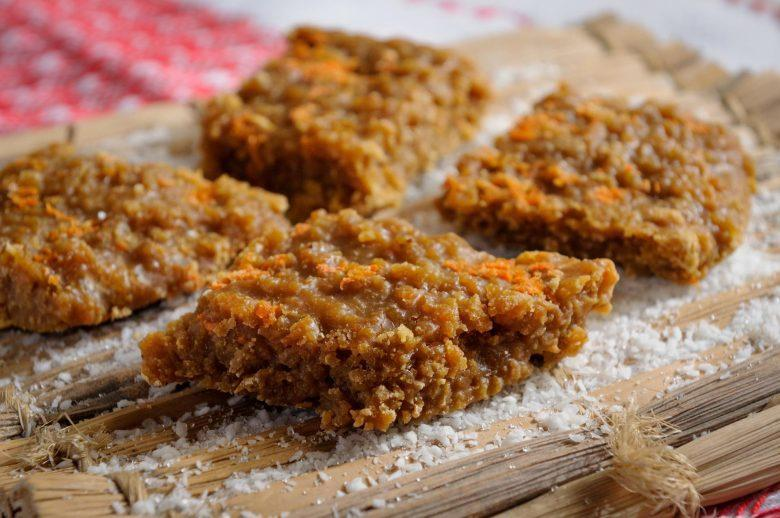

Cocada com rapadura
Essa é uma receita deliciosa para comer de sobremesa
Ingredientes
- 2 1/2 xícaras (chá) de leite
- 200 g de rapadura picada (comprada pronta)
- 300 g de coco fresco ou seco ralado
- 1 colher (chá) de manteiga ou margarina
Modo de preparo
- Em uma panela, misture o leite, a rapadura picada e o coco ralado.
- Leve ao fogo baixo, mexendo até soltar do fundo da panela.
- Desligue o fogo, misture a manteiga ou margarina e deixe esfriar.
- Transfira para uma compoteira e, se desejar, decore com fitas de coco fresco antes de servir.
- Conserve por até 20 dias na geladeira.
Essa receita possui o rendimento de 8 porções

imagem meramente ilustrativa